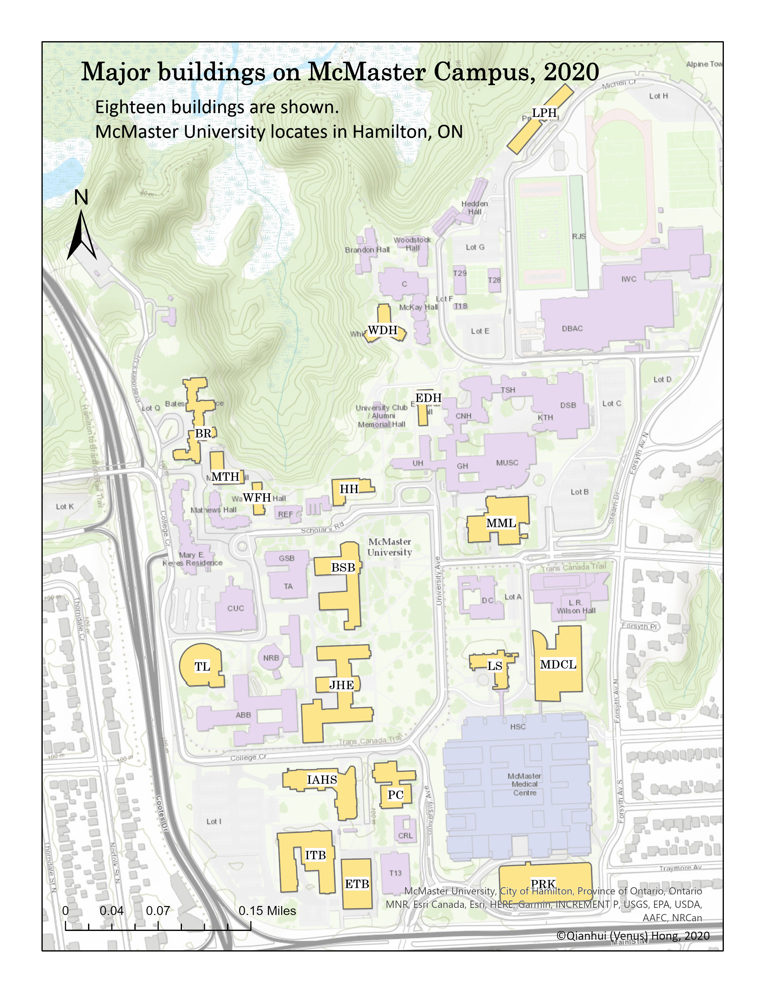

Georeferencing and Digitization
Aligning spatial data (like maps or images) to real-world geographic coordinates
Campus Buildings of McMaster University
One of the first maps I made.

Geometric Correction - Georeferencing using GCPs
I manually georeferenced a 1992 Landsat 5 TM image of Rice Lake by placing ground control points (GCPs) to establish spatial relationships between the image and a referenced coordinate system. This geometric correction ensured accurate alignment for reliable analysis and comparison with other geospatial datasets.

Senior Biology Thesis - Fieldwork Site Map
My undergraduate thesis on monitoring bee communities across disturbed urban forests habitats.

AutoCAD Survey Plan Site Sketch